Teckenskrift är ett skriftsystem som avbildar hur tecknen utförs. Det har
ett ’alfabet’ med symboler för de olika handformerna och använder enkla linjer
för att beskriva händernas rörelser. Det finns också symboler för ansikts-,
mun- och kroppsrörelser.
Varför teckenskrift? Det är ett bekvämt sätt att skriva ner saker på
teckenspråk. Själv använder jag teckenskrift när jag vill minnas ett nytt
persontecken eller om jag hör en okänd term på en föreläsning (som jag vill
lära mig, eller slå upp senare) eller om någon bara råkar säga något klokt som
jag vill komma ihåg.
Teckenskrift är en anpassning av ASLWrite
till svenskt teckenspråk. Den största skillnaden mellan teckenskrift och
ASLWrite är saknade handformer har lagts till. Teckenskrift utvecklades av mig,
zrajm (en hörande student som pluggar teckenspråkslingvistik) med utgångspunkt
ifrån ASLWrite. ASLWrite i sin tur har utvecklats ett flertal amerikanska döva
(Adrean Clark, Jules Dameron, Robert Arnold och många andra) under lång tid.
(Se även ’Om författaren’ nedan.)
För tydlighets skull använder jag här enbart ordet ’tecken’ om tecken i
teckenspråket och aldrig om skrivna krumelurer. När jag talar om skrivna
symboler skriver använder jag istället ord som ’markör’, ‘symbol’ etc.
Handalfabetet
Så här ser handalfabetet ut (om du tecknar med höger hand – använder du
vänster blir symbolerna spegelvända).
ABCDEFGHIJKLMNOPQRSTUVWXYZÅÄÖ
Bokstavering
Bland de som använder ASLWrite är
vanligt att använda tecknen i handalfabetet
som om de vore vanliga bokstäver när man skriver bokstaverade ord.
’fingerbetet’
Händer
Handsymbolerna är teckenskriftens motsvarighet till alfabetet. På
engelska används termen ’digibet’,
eller på ASL. (Kanske
skulle ’fingerbetet’ vara en bra svensk översättning?) Dessa symboler visar
vilken (eller vilka) handformer som ingår i ett tecken. Till skillnad från
alfabetet finns det däremot inte någon etablerad alfabetisk ordning som alla
runtom i världen är överens om.
En hands orientering i rummet (attityd) avgörs dels av vilken handsymbol
som används och hur den är orienterad på pappret, dels på om
någon lägesymbol eller kantmarkör
används. (Jämför tex sprethand och vinklad sprethand nedan så
ser du att de har olika orientering.)
Handsymboler
Här följer en lista med handsymboler, deras handform och (för att
underlätta sökande på sidan) det namn på handformen som används i svenskt
teckenspråk. Ovanligare handformer (det tas upp som allofoner i bokformen
av Svenskt teckenspråkslexikon) är
ljusare. Handformer specifika för svenskt teckenspråk är
markerade med blått – dessa symboler finns inte i
ASLWrite, men är konstruerade enligt samma principer.
Handens attityd (dvs orientering i rummet) indikeras också av
handsymbolens placering. De handsymboler i tabellen nedan som illustreras
med foto visar både handform och attityd, medan de handsymboler som
illustreras med teckningar dessvärre bara visar handformen. För att visa
att handen befinner sig i samma plan som ett teckens rörelse
används Kantmarkören.
Öppna handformer
sprethand
vinklad sprethand (variant)
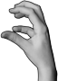
klohand
4-hand
böjd 4-hand (variant)
W-hand
böjd W-hand (variant)
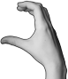
S-hand
S-hand (variant)
vinkelhand
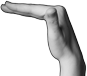
vinkelhand (variant)
flat hand
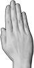
flat hand (variant)
D-hand
flat tumhand
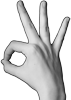
stor nyphand
stor nyphand (variant)
stor nyphand (variant)
stor nyphand (variant)
stort långfinger
stort långfinger (variant)
runt långfinger
runt långfinger (variant)
F-hand
Slutna handformer
knuten hand
knuten hand (variant)
E-hand
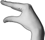
tumvinkelhand
A-hand
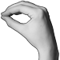
O-hand
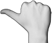
tumhand
tumhand (variant)
Q-hand
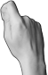
hållhand
Blandade handformer
nyphand
nyphand (variant)
rak måtthand
måtthand
måtthand (variant)
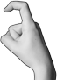
krokfinger
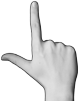
L-hand
pekfinger
pekfinger (variant)
vinklat pekfinger (variant)
T-hand
T-hand (variant)
långfinger
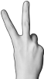
V-hand
?
V-hand (variant)
dubbelkrok
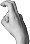
dubbelkrok (variant)
K-hand
X-hand
flyghand
flyghand (variant)
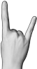
flyghand (variant)
U-hand
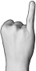
lillfinger
?
lillfinger (variant)
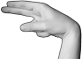
N-hand
N-hand (variant)
N-hand (variant)
N-hand (variant)
M-hand
liten tumvinkelhand
liten O-hand
liten O-hand (variant)
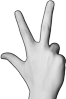
tupphand
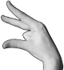
tupphand (variant)
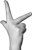
tupphand (variant)
böjd tupphand
Rörelse
Kontakt
Kontaktpunkt visar var (på kroppen eller den andra handen)
kontakt sker. Om kontakt sker flera gånger skrivs två (eller fler) punkter
intill varandra. Om det är ett specifikt finger som gör kontakt så skrivs
kontaktpunkten intill det fingret.
Rörelselinjer och slutpunkter
( etc) visar hur en hand rör sig
(med punkten i slutet). Vilken handform som används skrivs vanligen intill
början av rörelselinjen (men om det är samma handform under hela rörelsen
finns ganska stor frihet i var man placerar symbolen).
Tvärslutpunkt ()
används istället för en vanlig slutpunkt för att
understryka att en rörelse slutar väldigt tvärt.
Vertikalmarkör
() är ett litet T-format streck i
början på en rörelselinje som används (i det neutrala
läget) då en rörelselinje beskriver vertikal istället för en
horisontell rörelse. Ta en titt på skillnaden mellan ’tallrik’ (horisontell
rörelse) och ’cirkel’ (vertikal rörelse) nedan.
Förändringslinjer ()
ser ut som vanliga rörelselinjer, men visar att en handform förändras utan
förflyttning. Vanligtvis ser förändringslinjen ut som en understrykning
till handformerna ifråga. För att vara extra tydlig att det rör sig om en
förändringslinje (utan rörelse) kan man ’spika fast’ linjen med
en fixpunkt ().
Isärgående linjer
( )
visar att händerna först nuddar varandra och sen rör sig i varsin riktning.
Om en vertikalmarkör används skrivs den på mitten
av linjen.
Diakritiska markörer beskriver hur fingrar och
handled rör sig, och handens orientering i rummet (attityd). (Se även
’Exempel på ASLWrite: Diacritics’.)
kant- markörer
gångjärns- markör
vrid- markör
vink- markörer
fladder- markör
Kantmarkörerna används för att beskriva handens orientering i
rummet. Utan en kantmarkör antas en handen vara vänd så att antingen
handflatan eller handryggen är vänd bortåt i bild, med en kantmarkör är det
istället den markerade sidan av handen som är vänd bortåt.
Kantmarkören visar att en av handens kanter är vänd bortåt (istället för
handflata/handrygg) relativt tecknets perspektiv i skriften. (Det betyder
nedåt i neutrala läget, framåt
i framåtperspektivet och, i
profil åt den bortre kroppshalvan – dvs åt vänster om tecknet avbildats
från höger [högerhänt tecknare], och höger om tecknet avbildats från vänster
[vänsterhänt tecknare].)
Gångjärns- och vridmarkörerna beskriver
handledsrörelse, medan vink-
och fladdermarkörerna
beskriver fingerrörelse.
Vinkmarkören används för att beskriva att hela handen eller
fingrar vinkar. Om rörelsen gäller hela handen skrivs den nära handformens
mitt eller bas, om rörelsen avser ett eller flera fingrar så skrivs den vid
fingrarnas spets. Om rörelsen gäller alla fingrarna så skrivs markören ofta
i lite större storlek.
Fladdermarkören används för att visa att fingrarna har en
spelande eller ströende rörelse. När handformen har kontakt mellan
fingrarna och tummen är det ströende som avses, annars spelande.
Neutrala läget är den position där ett tecken utförs i
om den inte har någon specifik lägessymbol. Tecken i neutrala läget avbildas
ovanifrån (som om den som tecknar tittar ner på sina egna händer). Det
betyder att en rörelselinje uppåt på pappret motsvaras av en rörelse framåt i
verkligheten, och att handflatorna är vända antingen uppåt eller nedåt om
inget annat sägs. (För att markera att en rörelse sker vertikalt används
en vertikalmarkör, och för att visa att en hand är
annorlunda orienterad används någon av kantmarkörerna.)
Kroppsläget kan skrivas ur två olika perspektiv: i
profil och framåt. (Den enda lägessymbolen som har med fler än ett
streck är halsen som har två.)
Profil – Om ett tecken har en rörelse framåt (ut från
kroppen) så skrivs tecknet med en av lägessymbolerna i profil (istället för
ur tecknarens eget perspektiv).
Framåt – När perspektivet är framåt används
rörelselinjer precis som i neutrala läget (men
utan vertikalmarkörer). Tecknet skrivs från den
tecknande personens egna synvinkel (dvs högerhanden skrivs till höger,
vänsterhanden till vänster, precis som för neutrala läget).
Rynkad näsa () är den
enda symbolen som involverar näsan:
rynkad näsa
Ögonbryn
höjda
sänkta
sorgsna
ett höjt
kisande
Symboler som visar ögonbrynens position och används både för skriva
känslomässiga och syntaktiska uttryck. De skrivs upptill på raden och
antingen framför ett enskilt tecken, eller (lite på sned) som en parentes
runtomkring kring ett eller flera tecken.
De övriga ögonbrynssymbolerna har ingen syntaktisk funktion utan används
för känslouttryck.
Mun
Att göra:
Lägg till de saknade svenska språkljuden [t/d/n], [k/g/ŋ], [l/r] och
[h] bland munbilderna nedan.
Munrörelser skrivs oftast med symbolen för nedre halvan av ansiktet, men
kan också kombineras det hela ansiktet (plus eventuella symboler
för rynkad näsa och ögonbryn). De
skrivs på ansiktets plats, lite upphöjt på raden och framför
handsymbolerna. Om det behövs skrivs flera munsymboler efter varandra. (Se
även ’Anteckningar om munbilder’.)
léende
skratt
nerdragna mungipor
gråt
[p/b/m]
sammanpressade läppar
sammanpressade läppar med rörelse
läpprutt & uppblåsta kinder
sammanpressade & dragna åt sidorna
dragna åt ena sidan
uträckt tunga
tungprutt & uppblåsta kinder
[β]
insugna läppar
putande läppar (pussmun)
pussrörelse (ja-mun)
[a/ä]
vidöppen mun
öppen mun
[y/ö]
putande läppar (sh!-mun)
övre tandrad
[e/i/j/s/ɕ/ɧ]
sammanbitna tänder
sammanbitna & putande
öppen mun & utsträckt tunga
vicka på tungan
tungan utsträckt åt sidan
[f/v]
underläpp mot övertänder
tungan mot övertänder
[o/u/å]
rundade läppar
uppblåsta & rundade läppar
insugna kinder
[()]
uppblåsta kinder
sammanbitna och dragna åt ena sidan
äckel
Kroppsrörelser
Kroppsrörelser skrivs som en kombination av kroppssymboler och
rörelselinjer.
nickning
huvud- skakning
axelrörelse
Skiljesymboler
Paus () – För att
markera slutet på en mening (i ett längre sammanhang) används en liten
cirkel. I kortare sammanhang (enskilda fraser tex) är det ofta tydligt var
meningen slutar och symbolen kan utelämnas.
’Jag heter Zrajm. Vad heter du?’
Om författaren
Jag heter zrajm. Jag är hörande, bor i
Uppsala, och pluggar teckenspråkslingvistik på Stockholms universitet. Jag
har tidigare pluggat datorlingvistik på Uppsala universitet, efter att ha
halkat in på lingvistik via Star Trek och det konstruerade språket
klingonska (det första språk jag lärde
mig på egen hand). Jag har också konstruerat flera skriftsystem för eget
bruk, samt skapat ett typsnitt för teckenspråkstranskription
(FreeSans-SWL)
som numera används av Svenskt
Teckenspråkslexikon.
Det är min förhoppning att en skriven form av teckenspråk en dag kommer
vara allmängods, och att språket kommer synas på skyltar, i tidningar och
böcker. (Är det inte underligt att två döva som skriver till varandra inte
kan skriva på sitt eget modersmål?)
Mitt försök att anpassa ASLWrite till den teckenskrift som beskrivs här
föddes ur min önskan att kunna anteckna på teckenspråk (utan att behöva gå
omvägen över svenska) och att kunna förbättra mina språkkunskaper genom att
läsa (att kunna läsa böcker har varit ovärderligt för min inlärning av nya
ord och grammatik i alla språk jag lärt mig tidigare).
Om du är mer nyfiken på teckenskrift och mina tankar och resonemang under
anpassningen till svenskt teckenspråk är du varmt välkommen att ta en titt på
mina anteckningar. (De är dock huvudsakligen
avsedda för mig själv så förvänta dig ingen stor vältalighet!)
Mitt persontecken är (passande nog) detsamma som tecknet för
’klingon’:


 etc) visar hur en hand rör sig
(med punkten i slutet). Vilken handform som används skrivs vanligen intill
början av rörelselinjen (men om det är samma handform under hela rörelsen
finns ganska stor frihet i var man placerar symbolen).
etc) visar hur en hand rör sig
(med punkten i slutet). Vilken handform som används skrivs vanligen intill
början av rörelselinjen (men om det är samma handform under hela rörelsen
finns ganska stor frihet i var man placerar symbolen).


 )
används istället för en vanlig
)
används istället för en vanlig  ).
).


 )
visar att händerna rör sig mot varandra och möts i mitten. Om
en
)
visar att händerna rör sig mot varandra och möts i mitten. Om
en  )
visar att händerna först nuddar varandra och sen rör sig i varsin riktning.
Om en
)
visar att händerna först nuddar varandra och sen rör sig i varsin riktning.
Om en  ) markerar den
hand som rör sig först vid växelvis rörelse. Turmarkörens lilla snedstreck
riktas alltid in mot tecknets mitt.
) markerar den
hand som rör sig först vid växelvis rörelse. Turmarkörens lilla snedstreck
riktas alltid in mot tecknets mitt.

 ) visar att
fingrarna flätas samman.
) visar att
fingrarna flätas samman.

 ) visar
att händerna kretsar kring varandra.
) visar
att händerna kretsar kring varandra.


 ) är den
enda symbolen som involverar näsan:
) är den
enda symbolen som involverar näsan:


 ) – För att
markera slutet på en mening (i ett längre sammanhang) används en liten
cirkel. I kortare sammanhang (enskilda fraser tex) är det ofta tydligt var
meningen slutar och symbolen kan utelämnas.
) – För att
markera slutet på en mening (i ett längre sammanhang) används en liten
cirkel. I kortare sammanhang (enskilda fraser tex) är det ofta tydligt var
meningen slutar och symbolen kan utelämnas.